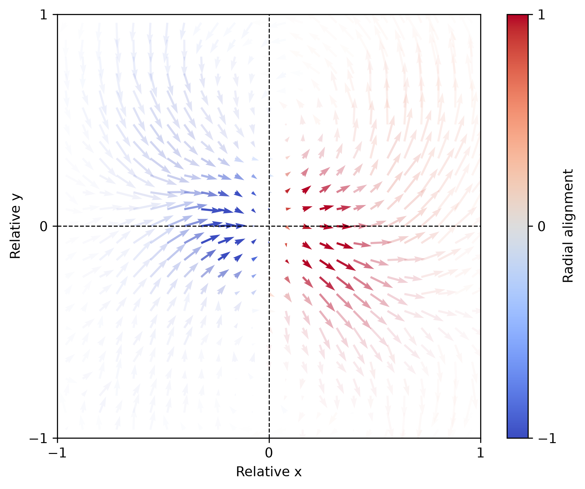

About
If you have spent time watching animals, you might have noticed that their behaviour is quite variable. Even in highly controlled lab environments, an individual may respond differently to identical stimuli. In my PhD I studied how this variability is shaped by history: how past sensory and motor experiences accumulate and influence present choices across multiple timescales. Combining behavioural experiments in larval zebrafish with computational models, I look for the minimal rules and feedback mechanisms that explain these dynamics.
I am also fascinated by collective movement, such as murmurations of birds and schools of fish. To study how local interactions scale up to group-level patterns, I use a virtual coupling framework that links real animals with simulated counterparts, so the structure of the interaction itself can be designed and manipulated.
Before Konstanz, I did a master's in biomedical engineering at IIT Ropar, with thesis work in the Theoretical Ecology and Evolution Lab at the Indian Institute of Science, and a bachelor's in biotechnology at PES University, Bengaluru.
Expertise
Projects

arrowsmith
An open-source Python package that turns tracked trajectories of interacting animals into maps of how each individual moves relative to the others. It includes a simulator with known interaction rules, so the maps can be checked against a ground truth. Equation recovery is in progress.
Sensory and response history in larval zebrafish
Zebrafish turn towards whole-field visual motion, but not the same way every time. I showed that recent stimuli and recent choices push behaviour in opposite directions, with effects lasting tens of minutes, and built a multiple-integrator model across three timescales that predicts a considerable fraction of trial-to-trial variability from history alone.
Publications
- Opposing influences of sensory and response history in larval zebrafish
- Non-stationary Markovian dynamics shape swim bias fluctuations in zebrafish larvae
- Hysteresis in the sensorimotor processing of larval zebrafish
Beyond research
Science communication
An attempt to visualise and communicate science.
Wildlife
Capturing animal behaviour in natural settings.
Ramen
Experiments with broths, noodles and flavours, well past the point of diminishing returns.
Chess
Thinking deeply about decision-making, then blundering anyway.
Travel and food
Highlighting travel and food experiences.
Contact
I am open to roles in data science, computational modelling and neurotechnology. The best way to reach me is by email at ashrit.mangalwedhekar@gmail.com.